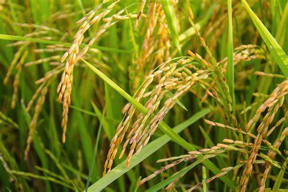
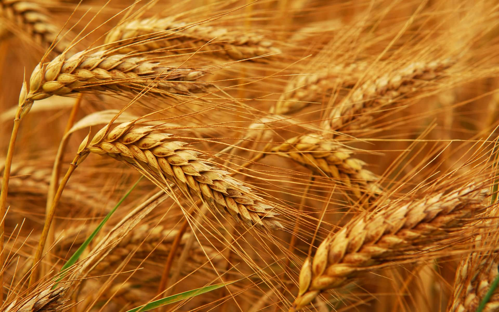

Informasi Tanaman

Padi { Oryza sativa }
Jenis: Tanaman Biji-Bijian
Panduan penanaman dan perawatan tanaman Padi.
bBaca Selengkapnya
Kedelai { Glycine max }
Jenis: Tanaman Biji-Bijian
Panduan penanaman dan perawatan tanaman Kedelai.
Baca Selengkapnya

Gandum (Triticum aestivum)
Jenis: Tanaman Biji-Bijian
Panduan penanaman dan perawatan tanaman Gandum.
Baca Selengkapnya
Jagung { Zea mays }
Jenis: Tanaman Biji-Bijian
Panduan penanaman dan perawatan tanaman jagung.
Baca Selengkapnya